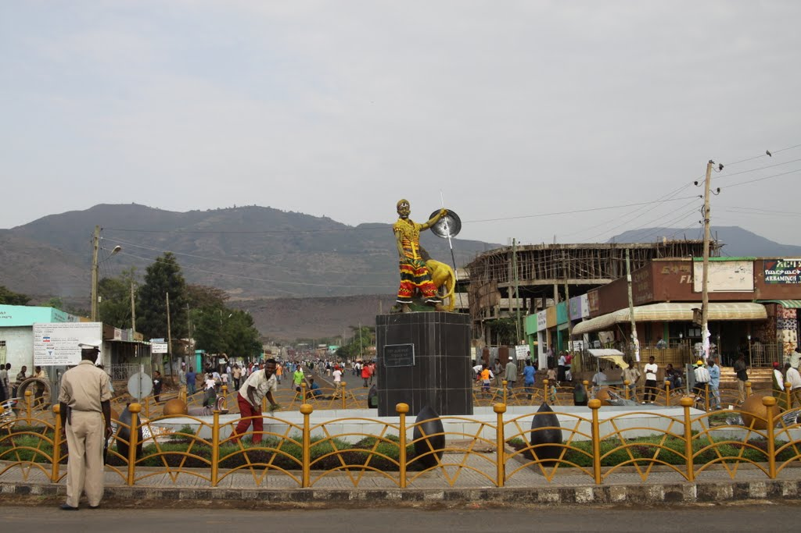

WELCOME TO ARBA MINCH CITY
Arba Minch City
Information About Arba Minch City
| Country | Ethiopia |
|---|
| Region | South Nation,Ntionalities,and People |
|---|
| Zone | Gamo zone |
|---|
| Elevation | 1,285 m (4,216 ft) |
|---|
| Location | 6°2′N 37°33′E |
|---|
| Population in(2017) |
|---|
| Total | 200,373 |
|---|
| Time zone | UTC+3 (EAT) |
|---|
| Summer (DST) | UTC+3 |
|---|
| Climate Aw | Aw(hot air condition) |
|---|
Arba Minch was founded in the early 1960s by the Fitawrari
Aemeroselasie Abebe in the area locally known as "Ganta Garo".
The city succeeded Chencha as the provincial capital city of Gamo
Gofa.
The oral tradition has it that Fitawrari Aemiro Selassie
Abebe had to fight with prominent figures of Chencha (Aba Gaga)
to move the capital from Chencha to Arba Minch (Ganta Garo).
One of the reasons for Aemiroselassie Abebe to move the
provincial center from Chencha to Arba Minch (Ganta Garo) was
for travelers from Gidole to Chencha to take a break after a long,
hot crossing of the arid Rift Valley area. Roads were built linking
the new town to Soddo and making Arba Minch only a day's
journey by road to the capital, Addis Ababa.
A telephone line connecting the town to the capital, costing
E$ 250,000, was turned up on 15 July 1967.
Arba Minch had previously served as a capital city for Gamo Gofa Province (Gamo Gofa Teklay Gizat),
North Omo Zone (Semen Omo), Kilil 9 (Region 9), Gamo Gofa Zone, and now is serving as a capital city
of Gamo Zone.
Secha
Arba Minch is a district and city in southern Ethiopia.
It consists of 2 areas: Schecha, the uptown administrative center, and Sikela, a commercial and residential zone 8 miles away.
link for secha building
Sikela

Arba Minch is a district and city in southern Ethiopia. It consists of 2 areas: Schecha, the uptown administrative center, and Sikela, a commercial and residential zone 8 miles away.